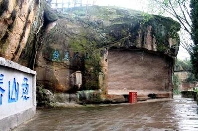
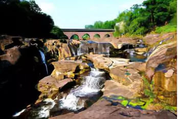
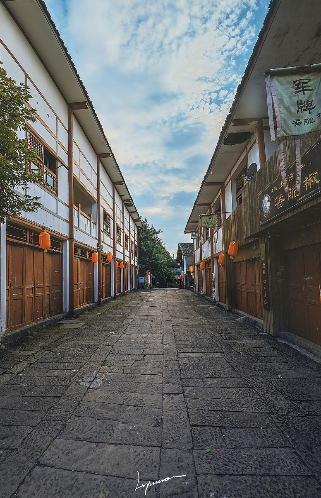

西丘陵盆地
合川区
卫星城市、重庆的城市拓展新区，截至2013年，全
区面积2356.21平方公里，辖7个街道办事处、23个街
道，总人口为155万人，城镇人口69万。
合川是巴文化的发源地之一，境内有钓鱼城、
涞滩古镇等著名历史文化古迹，周敦颐、张森楷、
卢作孚、陶行知等历代名人曾在此授教创业，是新
中国第一位少年英雄刘文学的故乡。
合川是重庆通往陕西、甘肃等地的交通要道和
渝西北、川东北的交通枢纽，合川三江汇流，煤炭
、岩盐、天然气、锶矿和石灰石储量丰富，中西部
最大的玻璃生产基地.被誉为"东方麦加城，上帝折
鞭处"，并以"合川桃片"闻名全国。
|  | 钓鱼城遗址位于中国西部四川省的合川市，是一处南宋时期（公元1127～1279年）的军事堡垒及古战场遗址。钓鱼城始建于南宋淳祐二年（公元1242年）。该城址距嘉陵江约400米，城周长20余公里。现存有城墙、7座城门、皇城、皇井、午朝门、元帅府、水阁凉亭、敌楼、炮台、阅兵场、指挥台、天池、插旗山、牢房、一字城、水师码头等遗迹。在城址内还发现有唐末宋初的石刻卧佛、千佛岩，以及宋、元、明、清的历代摩崖题记多处。此外，城内的忠义祠和护国寺内 |
|  | 涞滩镇古镇位于重庆合川市城东30公里处的鹫峰山上。1956年涞滩二佛被列为省级重点文物保护单位。1995年涞滩镇被命名为省级历史文化名镇和巴渝十小景之一，2000年被国家建设部列为全国十大保护古镇之一，2003年10月，被国家建设部、国家文物局评为首批中国历史文化名镇。古镇山环水抱、景色秀美，历史悠久、文化昌明，是中国首批历史文化名镇，全国重点文物保护单位，国家AAA级旅游景区，中国最美丽的村镇。涞滩古镇历史悠久，宋时就已初成场镇规模 |
|  | 古圣寺原名虎声寺，建于明隆庆年间（1567～1572年），清康熙四十九年(1710年)重建 寺庙时，因掘得明隆庆年间洪钟、残碣，更名古圣寺。清咸丰元年(1851年)再建。寺坐北向南，中轴线上依次为大山门、牛王殿、大雄殿、观音殿、善堂等，两边分设配殿及厢杂房十余间，呈复四合院布局，总占地3375平方米。寺内建筑雕梁画栋，屋顶飞檐起脊，雕工精美，具有重要的文物和艺术价值。1939年7月，人民教育家陶行知先生，在中共中央南方局的支持下，决心从教育入手 |